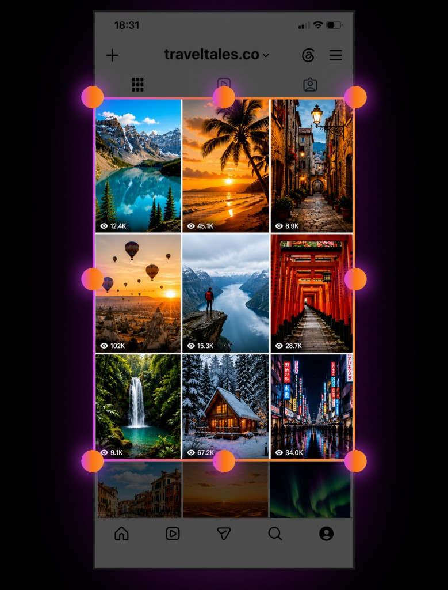
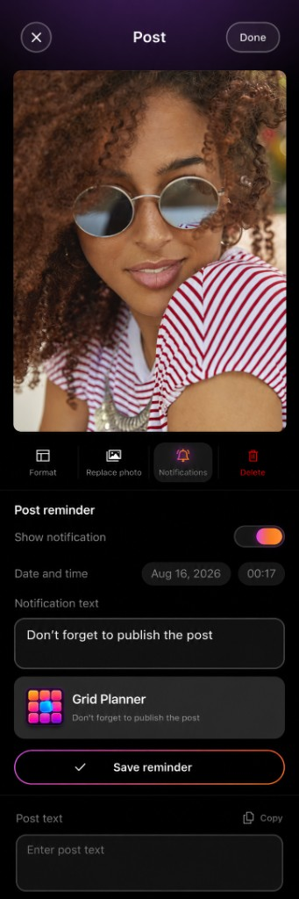
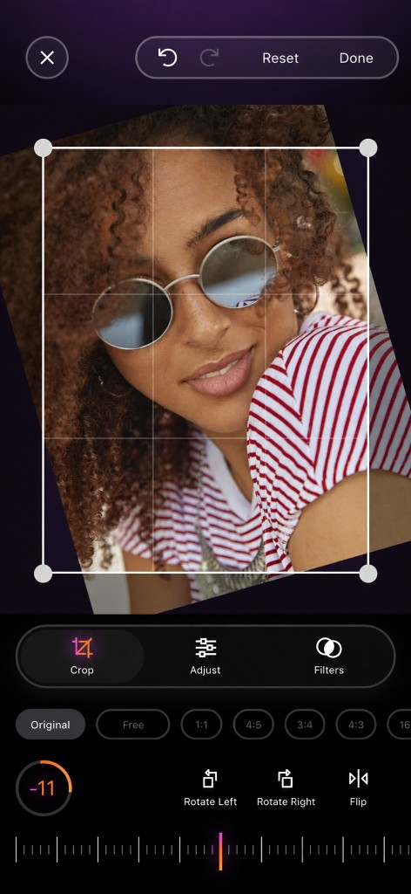

Import Grid
Bring in a screenshot of your feed and rebuild the layout in one pass.
Feed planning for iPhone
Grid Planner lets you arrange posts, carousels and drafts into a clean visual plan. Preview the whole feed, edit every cell, import a screenshot layout, and set reminders for the moment you want to publish.
Built for creators
Design layouts offline, compare looks, and keep drafts ready — then post when the timing is right.

Bring in a screenshot of your feed and rebuild the layout in one pass.
See how the profile grid will look before anything goes live.

Pick the date and time you want to post — and get a reminder then.
Every post, every cell

Crop, rotate and refine photos without leaving your grid plan.
Arrange a vivid 3×3 feed that matches the story you want to tell.
What you get
Drag, reorder and preview posts in a familiar profile-style grid so the whole feed feels balanced before you publish.
Keep a separate grid for each account or campaign — personal, brand, seasonal — without mixing layouts.
Capture an existing feed screenshot and turn it into editable cells you can rearrange and refine.
Crop, adjust and format each post inside the planner so every cell is ready to share.
Set the date and time you want to post. Grid Planner reminds you locally when it’s time to go live.
Park ideas, archive older posts and keep your active plan focused on what’s next.
Why Grid Planner
Whether you run one account or several, Grid Planner keeps planning, editing and reminders in one calm dark workspace — so posting feels intentional instead of last-minute.
Travel diaries, brand launches, content batches, personal aesthetics. Build the grid first. Publish when you’re ready.
Plan your perfect grid, polish every post, and get a reminder when it’s time to publish — all on iPhone.
View on App Store